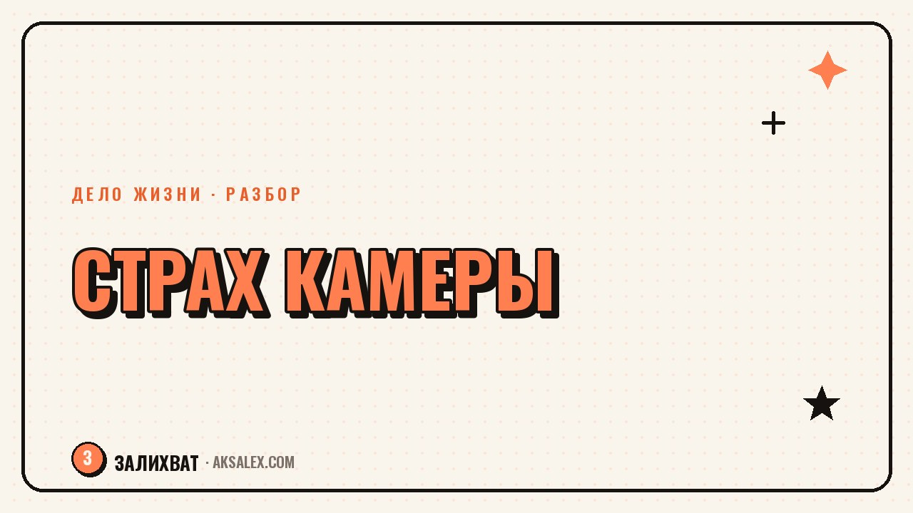

Как перестать бояться выступлений и камеры

Ты знаешь тему лучше всех в комнате, но стоит включить камеру или выйти к людям, и голос дрожит, мысли путаются, а руки не знают, куда деться. Страх выступлений и камеры - это не признак того, что тебе нечего сказать, а обычная реакция тела на ситуацию, где на тебя смотрят и оценивают. Разберём, откуда берётся этот страх и что с ним реально можно сделать, без советов в духе «расслабься и всё пройдёт».
Откуда берётся этот страх на самом деле
Страх публичности - один из самых распространённых, и дело не в характере, а в устройстве нервной системы. Мозг воспринимает взгляды множества людей как потенциальную угрозу, схожую с той, что была у предков в моменты, когда оказаться в центре внимания стаи означало опасность. Отсюда учащённое сердцебиение, сухость во рту и желание убежать - это не слабость, а древний защитный механизм, который сработал не по адресу.
У камеры добавляется ещё один слой: человек видит себя со стороны и начинает следить не за смыслом речи, а за собственным изображением - как выгляжу, не дёргается ли лицо, не видно ли волнения. Это удваивает нагрузку на внимание и делает разговор перед камерой тяжелее, чем перед живыми людьми, хотя формально аудитория там даже меньше.
Частые триггеры, которые усиливают страх
- Ощущение, что оценивают именно тебя, а не то, что ты говоришь
- Страх ошибиться и не суметь исправиться на глазах у всех
- Сравнение себя с людьми, у которых выступление выглядит легко
- Отсутствие практики - чем реже выступаешь, тем острее каждый раз стресс
Что не работает и почему
Совет «представь всех в нижнем белье» не работает, потому что не убирает причину тревоги, а лишь на секунду отвлекает и часто сбивает с мысли ещё сильнее. Идея выучить текст наизусть слово в слово тоже подводит: стоит запнуться на одном слове, и вся цепочка рассыпается, потому что мозг держится за точную формулировку, а не за смысл.
Попытка полностью убрать волнение перед выходом тоже обречена - даже опытные спикеры и актёры продолжают волноваться перед каждым выступлением, и это нормальная часть процесса. Реалистичная цель не «перестать волноваться совсем», а «научиться говорить, несмотря на волнение», и это принципиально разные задачи.
Уверенность на камере - это не отсутствие страха, а навык говорить дальше, когда страх уже есть. Этому навыку можно научиться, как и любому другому.
Что реально помогает: практические шаги
Работает постепенное увеличение сложности, а не резкий прыжок в большую аудиторию. Начни с записи короткого видео для себя, без публикации, только чтобы привыкнуть к своему изображению на экране. Затем запишись без монтажа и пересмотри - обычно человек видит себя куда строже, чем видят его зрители.
Порядок наращивания сложности
- Видео для себя без публикации - привыкание к камере
- Короткое видео близкому человеку, который точно поддержит
- Публикация для узкого круга - друзья или закрытая группа
- Открытая публикация без прямого эфира - есть время на дубль
- Прямой эфир или живое выступление - финальный этап после практики
Полезная техника - сместить фокус внимания с себя на пользу для зрителя. Перед выходом задай себе вопрос не «как я выгляжу», а «что из сказанного человеку реально пригодится». Это не убирает волнение полностью, но переключает мозг с самонаблюдения на содержание, а именно самонаблюдение и усиливает тревогу сильнее всего.
Сравнение подходов к тренировке
Разные способы подготовки подходят для разных исходных уровней тревоги. Кому-то достаточно практики в одиночку, кому-то нужна внешняя структура и обратная связь. Ниже - сравнение подходов, которые обычно предлагают в этой теме.
| Подход | В чём суть | Кому подходит |
|---|---|---|
| Самостоятельная практика | Регулярная запись видео для себя без публикации | Тем, кто готов заниматься дисциплинированно сам |
| Курсы публичных выступлений | Структура, упражнения, обратная связь группы | Тем, кому нужны внешние рамки и поддержка |
| Работа с психологом | Разбор источника тревоги, а не только техники речи | Тем, у кого страх выходит за рамки одной ситуации |
| Театральные и импровизационные студии | Игровой формат, снижение серьёзности ситуации | Тем, кому проще через игру, а не через теорию |
Когда стоит обратиться за помощью
Если страх выступлений сопровождается паническими атаками, физически мешает даже думать о ситуации заранее или распространяется на многие сферы жизни, а не только на публичные выступления, это повод обратиться к психологу или психотерапевту, а не пытаться проработать всё самостоятельно упражнениями из статьи. Специалист поможет разобраться, что именно стоит за тревогой в конкретном случае.
Для более лёгкой степени волнения обычно достаточно постепенной практики и честного разговора с собой о том, что именно пугает. Прогресс здесь редко линейный: после нескольких удачных выступлений может случиться откат, и это тоже нормальная часть пути, а не сигнал, что ничего не получается.
Частые вопросы
Как перестать бояться выступлений на работе
Начни с малого - выступай сначала перед узким кругом коллег, которым доверяешь, и постепенно увеличивай аудиторию. Помогает также готовиться не по тексту слово в слово, а по ключевым тезисам, чтобы запинка не разрушала всю структуру речи.
Почему на камеру говорить сложнее, чем перед живыми людьми
На камере ты одновременно говоришь и наблюдаешь за своим изображением на экране, что удваивает нагрузку на внимание. С живой аудиторией фокус легче удерживать на реакциях людей, а не на собственном отражении.
Помогают ли дыхательные техники перед выступлением
Да, медленное глубокое дыхание за несколько минут до выхода снижает физиологические проявления тревоги - учащённое сердцебиение и напряжение в теле. Это не убирает страх полностью, но делает его более управляемым в моменте.
Нужно ли полностью избавляться от волнения перед выступлением
Нет, даже опытные спикеры продолжают волноваться перед каждым выходом, и это нормальная часть процесса. Реалистичная цель - научиться говорить, несмотря на волнение, а не добиваться его полного исчезновения.
Когда страх сцены - повод обратиться к специалисту
Если страх сопровождается паническими атаками, физически мешает готовиться заранее или распространяется на многие сферы жизни за пределами выступлений, стоит обратиться к психологу. В более лёгких случаях обычно достаточно постепенной практики и разбора источника тревоги самостоятельно.
Раз тема оказалась полезной, вот что почитать следующим. Как понять, что не так - профессия или конкретная работа, и с чего начать разбираться.
Читать статью →а не вручную